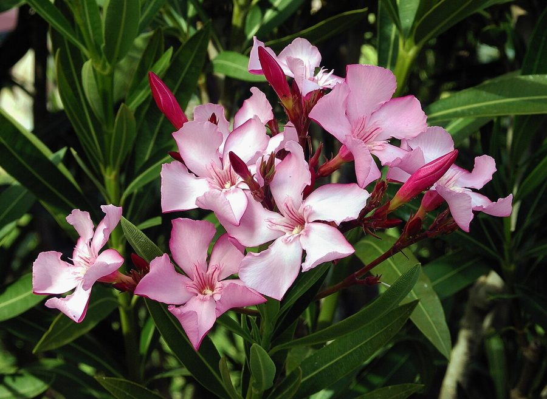

कनेरKaner
Nerium oleander · Apocynaceae · FLR-0165

- Scientific name
- Nerium oleander L.
- Family
- Apocynaceae
- Hindi
- कनेर
- Local names
- kaner, kanera, oleander, rose laurel, nerium
- Status here
- cultivated
- IUCN
- not evaluated
- Review
- audited and independently read
When to look कब देखें
Present all year.
Uses and possibilities उपयोग और संभावनाएँ
Drawn from the documented uses in the profile below, where each is labelled traditional, current or a research lead. All uses →
कनेर / Kaner
Nerium oleander L. — Apocynaceae
कनेर — सुंदर फूलों वाली झाड़ी, मंदिरों और बागों में लगाई जाती है। फूल गुलाबी, सफ़ेद, लाल, या पीले रंग के होते हैं। पूरा पौधा, पत्ती से फूल से लेकर बीज तक — सब ज़हरीला है। हाथ लगने से भी नुकसान हो सकता है। मंदिरों में पूजा की जाती है, पर यह जानना ज़रूरी है कि यह बहुत ख़तरनाक पौधा है।
Quick Identification त्वरित पहचान
| Feature | Description |
|---|---|
| Size | Evergreen shrub 1–4 m tall, much-branched, with an erect habit |
| Leaves | Narrow, lanceolate, 10–15 cm, leathery, dark green, entire, opposite or whorled |
| Flowers | Large, showy, pink, white, red, or yellow, with a tubular corolla and a distinctive crown-like corona, in terminal clusters, April–September |
| Fruit | Pair of long, slender follicles (pods) 15–20 cm, brown when dry |
| Latex | Milky, toxic |
| The test | Any part of the plant — leaf, flower, seed — is extremely poisonous |
Field tip: Kaner is cultivated in gardens for its spectacular flowers. The entire plant is toxic, and extreme care is required in handling. Any part may poison if ingested or if the latex contacts open wounds or the eyes.
हिंदी — कैसे पहचानें: सुंदर, रंग-बिरंगे फूल। पत्ती पतली, चमड़े जैसी, गहरी हरी। सब कुछ ज़हरीला। फूल गुलाबी, सफ़ेद, लाल, या पीले।
Morphology आकारिकी
Biometrics (cultivated shrubs in gardens):
| Measurement | Range |
|---|---|
| Height | 1–4 m |
| Stem diameter | 1–3 cm |
| Leaf length | 10–15 cm |
| Leaf width | 1–2 cm |
| Flower diameter | 3–5 cm |
| Pod length | 15–20 cm |
Stem and branches: Erect, much-branched, green when young, becoming woody and grey with age. The entire plant is full of toxic latex.
Leaves: Opposite or sometimes whorled, lanceolate, tapering to a fine point, leathery, dark green, entire, with a short petiole.
Flowers: Large, very showy, with five petals fused into a long tube, and a distinctive crown-like structure (corona) at the throat. Colours range from pink to white to red to yellow. Very fragrant. The flowers are borne in terminal clusters.
Fruit: Two long, slender follicles (pods) arising from each flower, brown when dry, containing many seeds with silky hairs.
Latex: White, abundant throughout the plant, extremely toxic.
हिंदी: पत्ती पतली, लंबी, चमड़े जैसी, गहरी हरी। फूल बड़े, रंगीन, सुगंधित। सब ज़हरीला दूध भरा है।
Behaviour & Ecology व्यवहार और पारिस्थितिकता
Kaner is a shrub native to the Mediterranean and adjacent regions but cultivated worldwide as an ornamental for its spectacular flowers. It grows best in warm, well-drained soils and is extremely drought-tolerant once established. The flowers are visited by insects, particularly butterflies and moths. The plant is much-branched and requires regular pruning to maintain shape.
TOXICITY WARNING: Every part of the plant is toxic. The leaves, flowers, seeds, fruit, stems, and roots all contain cardiac glycosides and other poisons. Ingestion of even a small quantity can cause severe gastrointestinal distress, cardiac arrhythmias, and death. The latex can cause dermatitis and burns if it contacts open wounds or eyes. Smoke from burning the plant can irritate the lungs.
Life Cycle / Phenology जीवन चक्र
| Month / season | Event |
|---|---|
| March–April | New growth; early flowers |
| April–September | Continuous flowering in warm season |
| August–October | Fruit pods mature |
| October–November | Pod ripens; seeds disperse |
| 2–3 years from seed | First flowering |
Seeds are long-lived but germinate slowly. Lifespan runs to 50–100 years in cultivation.
हिंदी: अप्रैल-सितंबर में फूल। गर्मी-बरसात में खूब खिलता है। 2-3 साल में फूल आता है।
Associated Species / Interactions संबंधित प्रजातियाँ
- Pollinators: Butterflies and moths visit the flowers, though the plant is not a major nectar source.
- Companions: Often planted with White Aak and other ornamental shrubs in temple gardens.
Pests and Diseases कीट और रोग
- Scale insects and mealybugs on stems and leaves.
- Minor leaf-eating beetles; rarely serious.
- No significant fungal diseases in well-drained cultivation.
Agricultural / Human Relevance कृषि प्रासंगिकता
TOXICITY AND SACRED USE (documented uses; this is a description, not medical advice):
Toxicity — Primary Concern:
The entire plant is extremely poisonous. All parts — leaf, flower, seed, stem, root, and latex — contain cardiac glycosides (oleandrin, neriine) and other toxic alkaloids. A single leaf or seed can be fatal if ingested. The latex can cause severe dermatitis and burns. Smoke from burning the plant irritates the lungs. No part of the plant is safe.
Sacred use — Documented but Context-dependent:
In Hindu tradition, kaner flowers are offered in temples and are associated with worship. The plant is planted in temple grounds and gardens. The flowers are used in religious ceremonies. This is documented cultural practice.
The atlas describes and does not advise. Kaner is deadly poison. The fact that it is planted in temples reflects its ornamental beauty and cultural history, not safety. Extreme caution is essential.
Today. Kaner is grown as an ornamental in gardens and temple grounds for its spectacular flowers. It is widely cultivated but the toxicity is often underestimated or unknown.
Research direction (a lead, not a result). Documentation of poisoning incidents with kaner and educational outreach on the plant's toxicity in regions where it is cultivated would be valuable.
हिंदी: सब कुछ ज़हरीला है — पत्ती, फूल, बीज, सब। एक पत्ती या बीज भी घातक है। मंदिरों में पूजा की जाती है, पर यह जानना ज़रूरी है कि बहुत ख़तरनाक है। हाथ लगाने से भी नुकसान हो सकता है।
Expected Locally स्थानीय रूप से अपेक्षित
Not a field record. Written from published accounts for eastern Uttar Pradesh. No confirmed local sighting yet — if you have seen it, that is what the atlas needs.
अभी तक स्थानीय पुष्टि नहीं। यह विवरण प्रकाशित स्रोतों से है, किसी अवलोकन से नहीं।
To be expected in temple gardens, ornamental settings, and roadside plantations across Basti district. It is not wild. Any cultivated tree is worth noting.
Distribution वितरण
Global range: Native to the Mediterranean region and the Arabian peninsula; cultivated worldwide as an ornamental.
In India: Widespread in temple gardens and ornamental plantings in warmer regions.
In Uttar Pradesh: Cultivated in temple grounds and gardens.
In Basti district / eastern UP: Occasional in temple gardens and ornamental settings.
Research Questions शोध प्रश्न
Anyone can investigate these | कोई भी इन प्रश्नों की जाँच कर सकता है
- How many kaner shrubs are in the temples and gardens of your village, and what colour are the flowers? / आपके क्षेत्र में कनेर कहाँ है? — Walk and document each shrub with location and flower colour.
- Does anyone in your village know that kaner is extremely poisonous? / क्या लोग जानते हैं कि कनेर ज़हरीला है? — Ask residents, particularly those with children, about awareness of toxicity.
- Has anyone accidentally ingested kaner leaves or flowers? — Discreetly ask health workers or ask if anyone knows of poisoning incidents.
- Which insects visit the flowers, and at what time of day? — Observe a flowering shrub for 30 minutes in summer.
- What do the long brown pods contain, and do they disperse easily? — Examine mature pods and collect seeds; note dispersal mechanisms.
Similar Species मिलती-जुलती प्रजातियाँ
| Species | How to tell apart | हिंदी |
|---|---|---|
| White Aak (Calotropis procera) | Leaves waxy, blue-grey; flowers white or pink with crown-like structure; different growth form | सफ़ेद आक — मोटी पत्तियाँ |
| Gulmohar (Delonix regia) | Leaves bipinnate; flowers red, not pink; very different structure | गुलमोहर — पंखनुमा पत्तियाँ |
| False Ashoka (Monoon longifolium) | Leaves simple and long; flowers yellow; fruit berries, not pods | अशोक नकली — पीले फूल |
Field rule: A cultivated shrub with narrow, leathery, dark green leaves and large, showy, fragrant pink, white, red, or yellow flowers, with long brown pods, is kaner. All parts are extremely poisonous.
Taxonomy & Classification वर्गीकरण
Original description. Described by Linnaeus in 1753 in Species Plantarum. The genus name Nerium comes from the Greek for "wet", referring to the plant's preference for moist habitats in cultivation. The epithet oleander refers to its resemblance to the olive (Olea) and laurel (Laurus).
Subspecies. Monotypic — no subspecies are currently recognised.
Family and order placement. Apocynaceae, the dogbane family, in the order Gentianales. The genus Nerium holds only one species, though many cultivars exist.
Phylogenetic notes. Nerium oleander is a well-known ornamental with a long history of cultivation. Its phylogenetic relationships are with the Apocynaceae and its relatives include other ornamental shrubs.
IUCN status rationale. Not evaluated. Widely cultivated; naturalized in some regions.
Photo Gallery फोटो गैलरी
Photos needed आवश्यक फोटो
- [ ] Whole shrub in flower (पूरी झाड़ी)
- [ ] Close-up of pink/white/red flowers (फूल)
- [ ] Narrow leathery leaves (पत्तियाँ)
- [ ] Long brown fruit pods (फली)
No photos yet — add field photos to media/species/kaner/ and run node scripts/sync_photos.js.
References संदर्भ
- Linnaeus, C. (1753). Species Plantarum, vol. 2, p. 209. Laurentii Salvii, Holmiae. [original description]
- Hooker, J.D. (1880). The Flora of British India, vol. 3. L. Reeve, London.
- Kirtikar, K.R. & Basu, B.D. (1935). Indian Medicinal Plants, 2nd ed., vol. 2. Lalit Mohan Basu, Allahabad.
- Duthie, J.F. (1903). Flora of the Upper Gangetic Plain. Government Printing, Calcutta.
- Howland, R.B. (1994). Oleander toxicity. In Plant Poisoning and Mycotoxin Diseases of Livestock in North America. Academic Press, pp. 341–352.
- GBIF Occurrence Data — Nerium oleander, India (2026).
Source file: species/flora/shrubs/kaner.md